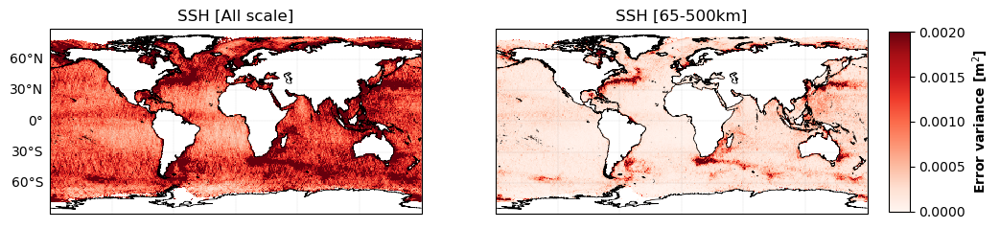
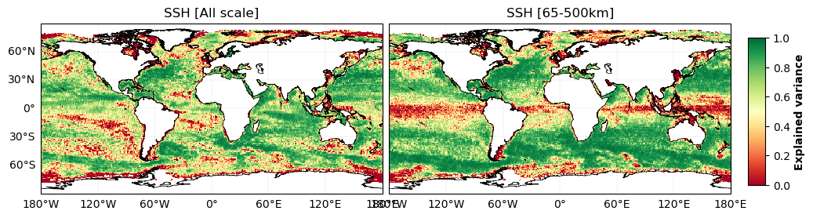
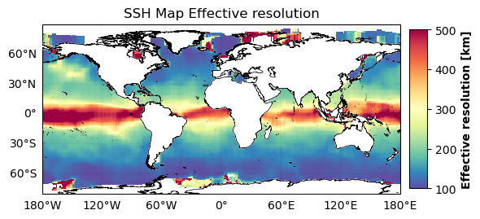

SSH - Along track metrics#
The ocean surface topography reconstruction is compared with independant data from Saral/AltiKa altimeter. The reconstructed maps are first interpolated onto the independant nadir tracks. The following diagnostics are then performed along these tracks and aggregated in 1° longitude x 1° latitude boxes.
Statistics#
Check alongtrack statistics example notebook
• Error variance maps#

• Explained variance maps#

• Statistics by regime#
Ocean regime |
Methods |
Err variance score (All scales) |
Err variance score (65-500km) |
|---|---|---|---|
Coastal |
DUACS |
0.683678 |
0.682788 |
Offshore high var |
DUACS |
0.941316 |
0.941316 |
Offshore low var |
DUACS |
0.800111 |
0.868348 |
Equatorial band |
DUACS |
0.764560 |
0.415881 |
Arctic |
DUACS |
0.667031 |
0.585653 |
Antarctic |
DUACS |
0.415025 |
0.077469 |
Spectral#
Check alongtrack spectral example notebook
• Effective resolution maps#
To estimate the effective resolution, we first compute the spectral noise-to-signal ratio, i.e. the ratio between the spectral content of the mapping error and the spectral content of independent along-track observations:
where \(\lambda_s\) is the spatial wavelength, \(S_{diff}(\lambda_s)\) is the power spectral density of the difference (SLA\(_{obs}\)–SLA\(_{map}\)) and \(S_{obs}(\lambda_s)\) is the spectral density of the independent observation.

References#
Ballarotta, M., Ubelmann, C., Pujol, M. I., Taburet, G., Fournier, F., Legeais, J. F., … & Picot, N. (2019). On the resolutions of ocean altimetry maps. Ocean Science, 15(4), 1091-1109.
Chelton, D. B., & Schlax, M. G. (2003). The accuracies of smoothed sea surface height fields constructed from tandem satellite altimeter datasets. Journal of Atmospheric and Oceanic Technology, 20(9), 1276-1302.
Chelton, D. B., Schlax, M. G., & Samelson, R. M. (2011). Global observations of nonlinear mesoscale eddies. Progress in oceanography, 91(2), 167-216.
Chelton, D., Dibarboure, G., Pujol, M. I., Taburet, G., & Schlax, M. G. (2014). The Spatial Resolution of AVISO Gridded Sea Surface Height Fields, OSTST Lake Constance, Germany, 28–31 October 2014.